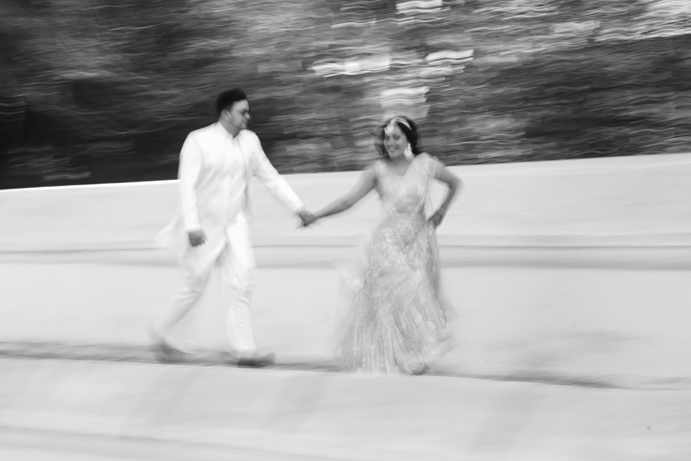

Behind-the-Scenes of a Commercial Shoot

Commercial shoots are more than just lights, cameras, and props — they are a symphony of creativity, precision, and teamwork. At Pana Production, every commercial we create tells a story while reflecting the brand’s identity with elegance and cinematic finesse. Today, we take you behind the lens to see how a commercial comes to life.
Planning: The Blueprint of Creativity
Before a single frame is captured, hours are spent in planning. From concept development to storyboarding, location scouting, and lighting design, every detail is meticulously curated. A well-thought-out plan ensures that the final visuals feel effortless while staying true to the brand’s vision.

The Set: Where Magic Happens
Once on set, energy and focus collide. Our team orchestrates camera angles, lighting setups, and props while ensuring the cast feels comfortable and confident. It’s in these moments — between takes and spontaneous improvisation — that authentic, cinematic shots are born.

Capturing Moments, Not Just Scenes
A commercial isn’t just about showcasing a product; it’s about capturing emotions and stories. Whether it’s a genuine reaction from an actor, a perfectly timed interaction, or subtle movements in a scene, we aim to immortalize the essence of the narrative.

Collaboration: The Heart of Production
Behind every successful shoot is a collaborative effort. Directors, cinematographers, stylists, lighting experts, and the client all work together. This synergy is what transforms technical execution into visual storytelling that feels natural and luxurious.

Post-Production: Refining the Vision
Even after the cameras stop rolling, the work continues. Color grading, editing, sound design, and visual effects bring the commercial to life. The result? A polished, cinematic masterpiece that elevates the brand and resonates with its audience.
From planning to the final frame, every commercial we craft at Pana Production is a story told with precision, creativity, and heart.